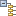

[Signals] ウィンドウの一番下には [Clocks] および [Resets] という 2 つのタブがあり、クロックまたはリセットの階層ツリー ビューが表示されるので、信号をすばやく確認したり接続したりできます。[Signals] ウィンドウでオブジェクトを選択すると、同じオブジェクトが デザイン キャンバスでも選択されます。
接続された信号は、ドライバー ピンからロード ピンの順に並べ替えられ、未接続の信号は別のフォルダーにリストされます。未接続信号は、選択して右クリックして [Make Connection] コマンドをクリックするか、未接続のクロック ロードを適切なドライバーにドラッグします。
[Group by Clock Domain] コマンド () を使用すると、クロック接続がクロック ドメイン別にグループ分けされます。これにより、個別のドライバーおよびロード ピンだけでなく、クロック ネット全体を選択および確認できます。
関連項目
| 『Vivado® Design Suite ユーザー ガイド : IP インテグレーターを使用した IP サブシステムの設計』 (UG994) の「[Signals] ウィンドウを使用した接続」 |